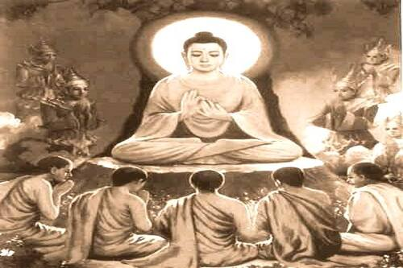

พระพุทธเจ้าทำนายดวงชะตา
จะกล่าวถึงเรื่องที่พระพุทธเจ้าทรงทำนายพระสุบิน (ความฝัน) ของพระเจ้าปเสนทิโกศล จำนวน 16 ข้อ ซึ่งพระพุทธเจ้าทรงทำนายว่า เหตุการณ์เหล่านั้นจะเกิดขึ้น ในยุคสมัยที่ศาสนาได้เสื่อมลง ซึ่งหลายอย่างได้เกิดขึ้นแล้วในปัจจุบัน เนื้อความดังกล่าวปรากฏใน อรรถกถาพระไตรปิฎก มหาสุบินชาดก เอกนิบาตชาดก ขุททกนิกาย มีเนื้อความดังต่อไปนี้
วันหนึ่งพระเจ้าโกศลมหาราช เสด็จเข้าสู่นิทรารมย์ในราตรีกาล ในปัจฉิมยามทอดพระเนตรเห็น พระสุบินนิมิตรอันใหญ่หลวง 16 ประการ ทรงตระหนกพระทัยตื่นพระบรรทม ทรงพระดำริว่า เพราะเราเห็นสุบินนิมิตรเหล่านี้ จักมีอะไรแก่เราบ้างหนอ เป็นผู้อันความสะดุ้งต่อมรณภัย คุกคามแล้ว ทรงประทับเหนือพระแท่นที่ไสยาสน์นั้นแล จนล่วงราตรีกาล
ครั้นรุ่งเช้า พวกพราหมณ์ปุโรหิตเข้าเฝ้ากราบทูลถามว่า ข้าแต่พระมหาราชเจ้า พระองค์บรรทมเป็นสุขหรือพระเจ้าข้า? รับสั่งตอบว่า ท่านอาจารย์ทั้งหลาย เราจักมีความสุข ได้อย่างไร เมื่อคืนนี้เวลาใกล้รุ่ง เราเห็นสุบินนิมิตร 16 ข้อ ตั้งแต่เห็นสุบินนิมิตรเหล่านั้นแล้ว เราถึงความหวาดกลัวเป็นกำลัง
เมื่อพวกปุโรหิตกราบทูลว่า ข้าแต่มหาราชเจ้า โปรดตรัสเล่าเถิดพระเจ้าข้า พวกข้าพระองค์สดับแล้ว จักทำนายถวายได้ จึงตรัสเล่าพระสุบิน ที่ทรงเห็นแล้วให้พวกพราหมณ์ฟัง แล้วตรัสว่า เพราะเหตุเห็นสุบินเหล่านี้ จักมีอะไรแก่เราบ้าง? พวกพราหมณ์พากันสลัดมือ. เมื่อรับสั่งถามว่า เพราะเหตุไรพวกท่านจึงพากันสลัดมือเล่า?
พวกพราหมณ์จึงพากันกราบทูลว่า ข้าแต่พระมหาราชเจ้า พระสุบินทั้งหลายร้ายกาจนัก รับสั่งถามว่า พระสุบินเหล่านั้นจักมีผลเป็นประการใด? พวกพราหมณ์จึงพากันกราบทูลว่า จักมีอันตรายใน 3 อย่างเหล่านี้ คือ อันตรายแก่ราชสมบัติ 1 อันตราย คือโรคจะเบียดเบียน 1 อันตรายแก่พระชนม์ 1 อย่างใดอย่างหนึ่ง. รับสั่งถามว่า พอจะแก้ไขได้ หรือแก้ไขไม่ได้
พราหมณ์ทั้งหลายกราบทูลว่า ขอเดชะ พระสุบินเหล่านี้ หมดทางแก้ไขเป็นแน่แท้ เพราะร้ายแรงยิ่งนัก แต่พวกข้าพระองค์ทั้งหลาย จักกระทำให้พอแก้ไขได้ เมื่อพวกหม่อมฉันไม่สามารถเพื่อจะแก้ไขพระสุบินเหล่านี้ได้แล้ว ขึ้นชื่อว่าความเป็นผู้สำเร็จการศึกษา จักอำนวยประโยชน์อะไร? รับสั่งถามว่า ท่านอาจารย์ทั้งหลาย จักกระทำอย่างไรเล่า ถึงจักให้คืนคลายได้
พวกพราหมณ์พากันกราบทูลว่า ข้าแต่มหาราชเจ้า พวกข้าพระองค์ต้องบูชายัญด้วยวัตถุอย่างละ 4 ทุกอย่างพระเจ้าข้า พระราชาทรงสะดุ้งพระทัย ตรัสว่า ท่านอาจารย์ทั้งหลาย ถ้าเช่นนั้น เราขอมอบชีวิตไว้ในมือของพวกท่านเถิด พวกท่านรีบกระทำความสวัสดีแก่เราเร็ว ๆ เถิด พวกพราหมณ์พากันร่าเริงยินดี ว่าพวกเราต้องได้ทรัพย์มาก จักต้องได้ของเคี้ยวกินมามาก ๆ แล้วพากันกราบทูลปลอบพระราชาว่า ข้าแต่มหาราชเจ้า อย่าได้ทรงวิตกเลยพระเจ้าข้า แล้วพากันออกจากราชนิเวศน์ จัดทำหลุมบูชายัญที่นอกพระนคร จับฝูงสัตว์ 4 เท้า มากเหล่ามัดเข้าไว้ที่หลักยัญ รวบรวมฝูงนกเข้าไว้เสร็จแล้ว เที่ยวกันขวักไขว่ไปมา กล่าวว่า เราควรจะได้สิ่งนี้ ๆ
ครั้งนั้นแล พระนางมัลลิกาเทวีทรงทราบเหตุนั้น ก็เข้าเฝ้าพระราชากราบทูลถามว่า ข้าแต่มหาราชเจ้า พวกพราหมณ์พากันเที่ยวขวักไขว่ไปมา มีเรื่องอะไรหรือเพคะ? พระราชาตรัสว่า แน่ะนางผู้เจริญ เธอมัวแต่สุขสบาย จึงไม่รู้ว่าอสรพิษมันสัญจรอยู่ใกล้ๆ หูของพวกเรา. พระนางทูลถามว่า ข้าแต่มหาราช เรื่องนั้นคืออะไรเพคะ? พระราชารับสั่งว่า เราฝันร้ายถึงปานนี้ พวกพราหมณ์พากันทำนายว่า อันตรายใน 3 อย่าง ไม่อย่างใดอย่างหนึ่งก็จักปรากฏ เพื่อบำบัดอันตรายเหล่านั้นต้องบูชายัญ จึงต้องสัญจรไปมาอยู่บ่อย ๆ
พระนางมัลลิกากราบทูลถามว่า ข้าแต่มหาราชเจ้า ก็ผู้ที่เป็นยอดพราหมณ์ในโลกพร้อมทั้งเทวโลก ทูลกระหม่อมได้ทูลถาม ถึงการแก้ไขพระสุบินแล้วหรือเพคะ? ทรงรับสั่งถามว่า นางผู้เจริญ พระผู้เป็นยอดพราหมณ์ในโลก พร้อมทั้งเทวโลกนั้น เป็นใครกันเล่า? พระนางกราบทูลว่า ทูลกระหม่อมไม่ทรงรู้จักมหาพราหมณ์ โคดมผู้ตถาคต หมดกิเลสบริสุทธิ์แล้ว เป็นสัพพัญญู เป็นบุคคลผู้เลิศในโลกพร้อมทั้งเทวโลก ดอกหรือเพคะ พระผู้มีพระภาคเจ้าพระองค์นั้น คงทรงทราบเหตุในพระสุบินแน่นอน ขอเชิญทูลกระหม่อมเสด็จพระราชดำเนินไปกราบทูลถามเถิดเพคะ.
พระราชาทรงรับสั่งว่า ดีละเทวี แล้วเสด็จไปยังพระวิหาร ถวายบังคมพระบรมศาสดาแล้วประทับนั่งอยู่ พระศาสดาทรงเปล่งพระสุรเสียงอันไพเราะ ตรัสถามว่า มหาบพิตร เหตุไรเล่าบพิตรจึงเสด็จมา ดุจมีราชกิจด่วน. พระราชากราบทูลว่า ข้าแต่พระองค์ผู้เจริญ เมื่อใกล้รุ่งหม่อมฉันเห็นมหาสุบิน 16 ข้อ สะดุ้งกลัว บอกเล่าแก่พวกพราหมณ์ พวกพราหมณ์ทำนายว่า ข้าแต่มหาราชเจ้า พระสุบินร้ายแรงนัก เพื่อระงับสุบินเหล่านั้นต้องบูชายัญ ด้วยยัญญวัตถุอย่างละ 4 ครบทุกอย่าง แล้วพากันเตรียมบูชายัญ ฝูงสัตว์เป็นอันมากถูกมรณภัยคุกคาม ข้าแต่พระผู้มีพระภาคเจ้า พระองค์เป็นบุคคลผู้เลิศในโลกทั้งเทวโลก เญยยธรรมที่เข้าไปกำหนดอดีต อนาคต ปัจจุบัน ที่ยังมาไม่ถึงซึ่งคัลลองในญาณมุขของพระองค์นั้นมิได้มีเลย ข้าแต่พระผู้มีพระภาคเจ้า ขอพระองค์ได้ทรงพระกรุณาโปรดทำนายผลแห่งสุบินของหม่อมฉันเหล่านั้นเถิด พระเจ้าข้า.
พระศาสดาตรัสว่า ขอถวายพระพร เป็นเช่นนั้นทีเดียวมหาบพิตร ในโลกทั้งเทวโลก เว้นตถาคตเสียแล้ว ผู้อื่นที่จะได้ชื่อว่าสามารถรู้เหตุ หรือผลของสุบินเหล่านี้ไม่มีเลย ตถาคตจักทำนายให้มหาบพิตร ก็แต่ว่ามหาบพิตรจงตรัสบอกพระสุบิน ตามทำนองที่ทรงเห็นนั้นเถิด พระราชาทรงรับพระพุทธดำรัสว่า ดีละ พระพุทธเจ้าข้า เริ่มกราบทูลพระสุบิน ตามทำนองที่ทรงเห็นอย่างถี่ถ้วน โดยทรงวางหัวข้อไว้ดังนี้ว่า
"โคอุสุภราชทั้งหลาย 1 ต้นไม้ทั้งหลาย 1 แม่โคทั้งหลาย 1 โคทั้งหลาย 1 ม้า 1 ถาดทอง 1 สุนัขจิ้งจอก 1 หม้อน้ำ 1 สระโบกขรณี 1 ข้าวไม่สุก 1 แก่นจันทน์ 1 น้ำเต้าจม 1 ศิลาลอย 1 เขียดขยอกงู 1 หงส์ทองล้อมกา 1 เสือกลัวแพะ 1"

สุบินนิมิตข้อที่ 1 : ภัยธรรมชาติ พระเจ้าปเสนทิโกศล ทรงสุบินนิมิตเห็น โคล่ำสัน 4 ตัว วิ่งมาจากทิศทั้ง 4 มีลักษณะอาการเกรี้ยวกราด ประดุจจะชนกัน ด้วยความโกรธแค้นกันมานาน พอโคทั้ง 4 วิ่งเข้ามาใกล้กันแล้ว กลับถอยห่างออกจากกันไป ไม่ชนกันเลย พระพุทธเจ้าให้คำทำนายว่า อนาคตต่อไปในภายภาคหน้าโน้น จะเกิดภัยธรรมชาติขึ้น คือ ฟ้าฝนจะไม่ตกต้องตามฤดูกาล จะมีก้อนเมฆขนาดใหญ่ลอยมาจากทิศทั้ง 4 เหมือนกับฟ้าฝนจะตกลงมาในพื้นปฐพีอย่างหนัก เมื่อก้อนเมฆทั้ง 4 ลอยเข้ามาใกล้กันแล้ว ก็ลอยถอยห่างออกจากกันไป ไม่มีฝนตกลงมาในพื้นปฐพีเลย
สุบินนิมิตข้อที่ 2 : เยาวชนมั่วสุมเสพกาม พระเจ้าปเสนทิโกศล ทรงสุบินนิมิตเห็น ต้นไม้นานาชนิด ยังไม่ใหญ่โตพอที่จะมีดอกมีผล แต่ต้นไม้นั้นเต็มไปด้วยดอกและผล จนกิ่งก้านสาขาจะรอรับดอกผลนั้นไม่ไหว พระพุทธเจ้าให้คำทำนายว่า อนาคตต่อไปในภายภาคหน้าโน้น กุมารีที่มีวัยยังไม่สมควรจะมีสามี แต่กุมารีนั้นอยากแต่งงานให้เป็นครอบครัว เพราะมีความกระสัน ใฝ่ฝันในราคะตัณหา ใจมีความกำเริบในกามคุณ มีความยินดีใน รูป เสียง กลิ่น รส โผฏฐัพพะ เป็นอย่างมาก มีความอยากในกามารมณ์แห่งความรักความใคร่ จึงได้แต่งงานกันเมื่ออายุยังวัยเด็ก ถูกต้องตามประเพณีนิยม บางคนมั่วสุมกัน ไม่มีความละอาย เยี่ยงสัตว์ดิรัจฉาน เมื่อตั้งครรภ์ขึ้นมา ก็หาวิธีฆ่าลูกในท้องของตัวเอง จึงเป็นบาปกรรมต่อไปในภายภาคหน้ายิ่งนัก เด็กบางคน ยังมีพ่อแม่เลี้ยงดูอยู่บ้าง เด็กบางคนพ่อแม่เลี้ยงดูไม่ไหว จึงได้ปล่อยปละละเลยให้หาขอทานกินตามลำพัง เป็นเด็กเร่ร่อนจรจัด ไม่มีพ่อแม่ ไม่มีตระกูล ไม่มีการศึกษา ไม่มีที่พึ่งพาอาศัยในบ้านเรือน ค่ำที่ไหนนอนที่นั่น อดบ้าง อิ่มบ้าง น่าเวทนายิ่งนัก เหตุการณ์อย่างนี้ จะมีในภายภาคหน้าโน้นใครได้ไปเกิดในยุคนั้น สมัยนั้น ก็จะต้องเจอเหตุการณ์อย่างนี้แล
สุบินนิมิตข้อที่ 3 : พ่อแม่ต้องเอาใจลูก พระเจ้าปเสนทิโกศล ทรงสุบินนิมิตเห็น ฝูงพ่อแม่โคทั้งหลายพากันดูดกิน นมลูกของตัวเอง พระพุทธเจ้าให้คำทำนายว่า อนาคตต่อไปในภายภาคหน้าโน้น พ่อแม่ทั้งหลาย จะได้อาศัยกินหยาดเหงื่อแรงงานของลูก อาศัยข้าวปลาอาหารเครื่องอุปโภคบริโภคต่าง ๆ ที่ลูกแสวงหามาเลี้ยงดู พร้อมทั้งเงินทอง ก็ต้องแบ่งปันให้พ่อแม่ได้จับจ่ายใช้สอย ในยุคนั้นสมัยนั้น พ่อแม่ก็ต้องเอาอกเอาใจลูกยิ่งนัก ต้องประจบประแจง ปะเหลาะลูกอยู่เสมอ ถ้าพูดต่อลูกดีๆ ลูกก็แบ่งปันเงินทองให้ได้ใช้บ้าง ถ้าพ่อแม่พูดไม่ดี ก็จะไม่ได้รับส่วนแบ่งอะไรจากลูกนี้เลย เหตุการณ์อย่างนี้ จะเกิดมีในภายภาคหน้าโน้น
สุบินนิมิตข้อที่ 4 : ผู้อ่อนประสบการณ์บริหารประเทศ พระเจ้าปเสนทิโกศล ทรงสุบินนิมิตเห็น ฝูงคนทั้งหลายพากันจับลูกโคตัวเล็ก ๆ เข้ามาเทียมแอกเพื่อลากล้อเกวียน เมื่อลากไปไม่ไหว ก็จะพากันเฆี่ยนตี พระพุทธเจ้าให้คำทำนายว่า อนาคตต่อไปในภายภาคหน้าโน้น คนทั้งหลายจะพากันนิยมเอาเด็กที่จบปริญญามาใหม่ ๆ ไปรับราชการแผ่นดินบริหารการพัฒนาประเทศชาติ บ้านเมือง อันเป็นงานที่หนัก ถึงจะมีความรู้อยู่ก็ตาม แต่เด็กนั้นยังขาดประสบการณ์ ขาดความสามารถ ขาดความรอบรู้ ขาดความรอบคอบ ในการบริหารเศรษฐกิจ การเมืองและสังคม จึงเกิดความผิดพลาด ล่าช้า ไม่ทันต่อเหตุการณ์ ขาดความรับผิดชอบ ขาดดุลการค้า ทำให้ประเทศชาติเสียหาย ทำให้ถ่วงความเจริญของประเทศชาติ ทำให้คนดุด่าว่ากล่าวนานาประการ เหตุการณ์อย่างนี้ จะเกิดมีในภายภาคหน้าโน้น
สุบินนิมิตข้อที่ 5 : ความไม่เป็นธรรมในการตัดสินความ พระเจ้าปเสนทิโกศล ทรงสุบินนิมิตเห็น ม้าตัวเดียว หัวเดียว มีสองปาก กินหญ้าได้สองทาง กินเท่าไรก็ไม่มีความอิ่มพอพระพุทธเจ้าให้คำทำนายว่า อนาคตต่อไปในภายภาคหน้าโน้น คนผู้มีหน้าที่ตัดสินคดีความต่าง ๆ จะใช้อุบายวิธีอันมีเล่ห์เหลี่ยม เพื่อเอาเงินจากคู่กรณีทั้งสอง เอาทั้งฝ่ายโจทก์ เอาทั้งฝ่ายจำเลย เพื่อเป็นค่าจ้างรางวัลใน การวินิจฉัยคดีความบ้าง เอาค่านั้นบ้าง เอาค่านี้บ้าง ถ้าไม่ได้ตามความเรียกร้อง ก็จะไม่รับเรื่องที่มาร้องเรียน ต้องการเท่าไรก็เรียกร้องตามใจชอบ ถ้าเรื่องเล็กๆ น้อยๆ ก็เรียกร้องเอาน้อย ถ้าเป็นเรื่องใหญ่ก็จะเรียกร้องเอาเงินอย่างเต็มที่ แล้วจึงจะมาวินิจฉัยคดี ตัดสินต่อไป เหตุการณ์อย่างนี้ จะเกิดมีภายภาคหน้าทั่วโลก
สุบินนิมิตข้อที่ 6 : พระธรรมคำสอนถูกเหยียบย่ำ พระเจ้าปเสนทิโกศล ทรงสุบินนิมิตเห็น หมู่มนุษย์ ถือถาดทองคำอันมีค่ามหาศาล ไปวางไว้สุนัขจิ้งจอกถ่ายอุจจาระถ่ายปัสสาวะใส่พระพุทธเจ้าให้คำทำนายว่า อนาคตต่อไปในภายภาคหน้าโน้น กลุ่มคนที่โง่เขลาปัญญาทราม จะเอาพระธรรมคำสอนของเราตถาคต ไปให้ลัทธิต่างๆ เหยียบย่ำทำลาย แล้วถ่ายทอดลัทธิของเขา เอาคำสอนของเขาที่สกปรกโสโครกด้วยกิเลสตัณหา มากลบเกลื่อนในคำสอนของเรา แล้วดัดแปลงแก้ไขคำสอนของเรา ให้เข้ากันกับลัทธิของเขา แล้วประกาศว่า คำสอนของเราตถาคต เป็นส่วนหนึ่งในลัทธิของเขา ให้คนทั้งหลายมีความเข้าใจผิดว่า คำสอนของเราเข้ากันได้กับของเขา ถือว่าเป็นอันเดียวกัน ลัทธิเหล่านั้นก็จะไม่รู้คุณค่าของคำสอนของเราตถาคตแต่อย่างใด มนุษย์อย่างนี้ก็จะมีในเมื่อเราตถาคตนิพพานไปแล้ว และจะมีลัทธิต่าง ๆ มาอวดอ้างว่าเป็นศาสนาเป็นจำนวนมาก
สุบินนิมิตข้อที่ 7 : ผู้มีใจต่ำแอบอ้างสถาบันกษัตริย์ พระเจ้าปเสนทิโกศล ทรงสุบินนิมิตเห็น ชายคนหนึ่ง เอาหนังสือมานั่งฟั่นให้เป็นเชือก อยู่บนม้านั่ง แล้วมีสุนัขจิ้งจอกคอยกัดกินอยู่ เมื่อฟั่นเชือกเสร็จ สุนัขจิ้งจอกก็กินหมดทันที พระพุทธเจ้าให้คำทำนายว่า อนาคตต่อไปในภายภาคหน้าโน้น คนผู้มีจิตใจต่ำ ปัญญาทราม จะได้รับสมมุติ ยกย่องขึ้นเป็นผู้มียศถาบรรดาศักดิ์ นั่งทำงานอยู่ในพระราชสำนักระดับสูง อาศัยอำนาจ พระบารมีของพระมหากษัตริย์ ว่าราชการแผ่นดินแทนพระองค์อยู่เนืองนิตย์ โดยมีความโง่เขลาเบาปัญญา พูดจาขาดความสำรวม กล่าวเปิดเผยความลับต่างๆ ในพระราชสำนัก ให้หมู่ประชาชนได้รู้ คนลัทธิต่าง ๆ ที่ไม่มีความหวังดีต่อพระมหากษัตริย์อยู่แล้ว ได้ยินเข้า จึงนำเอาไปตีแผ่ โฆษณาให้คนอื่นคลายศรัทธา หมดความเคารพในวงศ์พระมหากษัตริย์ และหมดความเชื่อถือในพระราชวงศ์ต่อไป เหตุการณ์อย่างนี้ จะเกิดมีในภายภาคหน้าโน้นคนที่ไม่มีความหวังดีต่อพระมหากษัตริย์ จะเป็นหนอนบ่อนไส้เสียเอง
สุบินนิมิตข้อที่ 8 : ทำบุญเลือกหน้า พระเจ้าปเสนทิโกศล ทรงสุบินนิมิตเห็น โอ่งน้ำใหญ่และโอ่งน้ำเล็กตั้งอยู่ในที่แห่งเดียวกัน แล้วมีคนทั้งหลาย แย่งกันตักน้ำ เทใส่โอ่งน้ำใหญ่ จนล้นเหลือ ส่วนโอ่งน้ำเล็ก ไม่มีใครตักน้ำใส่เลย พระพุทธเจ้าให้คำทำนายว่า อนาคตต่อไปในภายภาคหน้าโน้น จะมีคนทำบุญโดยเลือกหน้า พระองค์ที่มีอายุมาก พรรษามาก มียศถาบรรดาศักดิ์ในตำแหน่งต่าง ๆ จะมีคนให้ความสนใจจะพากันถวายเครื่องไทยทานเป็นจำนวนมาก ล้วนแล้วแต่ของที่ดี ๆ มีค่า มีราคา ข้าวปลาอาหาร ปิ่นโตเถาขนาดใหญ่ ตั้งต่อหน้า จนเหลือเฟือ ส่วนพระเล็กเณรน้อยนั่งอยู่รอบข้าง ไม่มีใครคิดถวายอะไรเลย มีแต่งนั่งดูตาปริบ ๆ เหตุการณ์อย่างนี้ จะเกิดมีในภายภาคหน้าโน้น
สุบินนิมิตข้อที่ 9 : คอรัปชั่นในแผ่นดิน พระเจ้าปเสนทิโกศล ทรงสุบินนิมิตเห็น สระน้ำขนาดใหญ่ มีน้ำรอบนอกใส่สะอาดเยือกเย็น ส่วนน้ำในกลางสระขุ่นข้นเป็นโคลนตม แล้วมีสัตว์น้อยใหญ่ทั้งหลาย พากันแย่งชิงกินน้ำในสระที่ขุ่นข้นเป็นตมนั้น ส่วนน้ำรอบนอกที่ใสสะอาดเยือกเย็น ไม่มีสัตว์ตัวใดอยากจะกินเลย พระพุทธเจ้าให้คำทำนายว่า อนาคตต่อไปในภายภาคหน้าโน้น คนจะมีความโลภ ความอยาก ไม่อิ่มพอในเงินทองมากขึ้น การงานที่สะอาด บริสุทธิ์ และสุจริต ไม่อยากทำ ถือว่า เงินเดือนน้อย ร่ำรวยช้า ไม่พอกับความโลภความอยากของตัวเอง จึงได้ลงสมัครตัวเข้ามาในสภาสันนิบาต เพื่อจะมีอำนาจในการบริหารงานและบริหารเงินของแผ่นดินได้อย่างเต็มที่ ใช้อุบายวิธี อันมีเล่ห์เหลี่ยม ทุจริต คิดมิชอบ ในเงินของแผ่นดิน มือใครยาว สาวได้สาวเอา จะได้เงินมาด้วยวิธีสกปรกอย่างไร จะไม่มีความละอายแก่ใจตัวเองเลย ขอให้ได้เงินก้อนโตมา ก็เป็นที่พอใจ ลักษณะนี้จะมีกันทั่วโลก มีทั่วทุกประเทศเขตแดน และจะเพิ่มความรุนแรงขึ้น จะเกิดความยุ่งเหยิงในสภาสันนิบาตของประเทศนั้น ๆ เพราะการแบ่งสันตำแหน่งในการดูดกินเงินภายในประเทศนั้น ไม่ลงตัว ผู้นั้นจะได้กินน้อย ผู้นั้นจะได้กินมาก ผู้นั้นจะไม่ได้กินอะไรเลย สุดท้ายก็เกิดงัดข้อกันเอง เหตุการณ์อย่างนี้ จะเกิดมีในภายภาคหน้าโน้น
สุบินนิมิตข้อที่ 10 : สงสัยในมรรคผลนิพพาน พระเจ้าปเสนทิโกศล ทรงสุบินนิมิตเห็น หม้อหุงข้าวหม้อเดียวมีความแตกต่างกัน ข้าวในหม้อซีกหนึ่งสุก ซีกหนึ่งดิบๆ สุกๆ อีกซีกหนึ่งข้าวไม่สุกเลย พระพุทธเจ้าให้คำทำนายว่า อนาคตต่อไปในภายภาคหน้าโน้น คนในโลกนี้จะมีความคิดเห็นที่แตกต่างกันไป กลุ่มหนึ่งจะมีความเชื่อว่า เราตถาคตเป็นที่พึ่งที่เคารพจริง พระธรรมคำสอนของเราตถาคตเป็นสวากขาตธรรม เมื่อนำไปปฏิบัติให้ถึงที่สุดแล้วจะพ้นจากทุกข์ได้จริง เชื่อว่ามีมรรคผลนิพพานจริง นรกสวรรค์มีจริง กรรมดีกรรมชั่วให้ผลแก่บุคคลที่กระทำจริง ตายแล้วเมื่อยังมีกิเลสตัณหาอยู่เชื่อว่าได้มาเกิดใหม่ อีกกลุ่มหนึ่งยังไม่แน่ใจว่า มรรคผลนิพพานในยุคนี้ สมัยนี้ มีจริงหรือไม่ เพราะพระพุทธศาสนาได้ล่วงเลยไปนาน พระธรรมคำสอนของพระพุทธเจ้า มีความสมบูรณ์อยู่หรือไม่ พระสงฆ์ที่ปฏิบัติดีปฏิบัติชอบ ได้บรรลุมรรคผลนิพพาน ในยุคนี้มีจริงหรือไม่ มีแต่ความสงสัยลังเล ไม่แน่ใจ อีกกลุ่มหนึ่งปฏิเสธว่า มรรคผลนิพพานไม่มีนรกสวรรค์ไม่มี ทำดี ทำชั่วไม่ให้ผลในภายหน้าชาติหน้า ตายแล้วไม่ได้เกิดใหม่แต่อย่างใด ในช่วงปลายพุทธศาสนาโน้น คนจะเกิดเป็นมิจฉาทิฏฐิ มีความเห็นผิดมากขึ้น ๆ ดังนี้
สุบินนิมิตข้อที่ 11 : นำพระธรรมมาขายกิน พระเจ้าปเสนทิโกศล ทรงสุบินนิมิตเห็น คนพวกหนึ่ง เอาแก่นจันทร์แดงที่มีค่าราคาแพง ไปแลกกับนมเปรี้ยวหม้อเดียว ซึ่งไม่สมค่าราคากันเลย พระพุทธเจ้าให้คำทำนายว่า อนาคตต่อไปในภายภาคหน้าโน้น คนพวกหนึ่ง จะเอาพระธรรมคำสอนของเราตถาคต ไปแลกเปลี่ยนเป็นเงินตรา จะเขียนเป็นตำราเพื่อออกจำหน่าย ขายกิน หารายได้เพื่อเลี้ยงชีวิต เอาพระธรรมคำสอนของเราตถาคต ทำเป็นการแสดง แต่งกลอน เพื่อผลประโยชน์ในกัณฑ์เทศน์ แสดงธรรมเพื่อเห็นแก่ค่าจ้างรางวัล อันเป็นอามิส ไม่สมค่าราคากันเลย สิ่งเหล่านี้ จะเกิดขึ้นในช่วงปลายศาสนาของเราตถาคตโน้น
สุบินนิมิตข้อที่ 12 : คนดีถูกขัดขวางรังแก พระเจ้าปเสนทิโกศล ทรงสุบินนิมิตเห็น น้ำเต้าแห้งเปล่ากลวงใน ตามธรรมดาแล้วจะลอยอยู่บนน้ำ แต่น้ำเต้าเปล่านั้น กลับดิ่งจมลงในน้ำนั้นเสีย พระพุทธเจ้าให้คำทำนายว่า อนาคตต่อไปในภายภาคหน้าโน้น คนดี มีความรู้ดี มีสติปัญญาดี มีความรอบรู้ มีความฉลาด มีความสามารถ มีทั้งพระและฆราวาส จะไม่ได้รับความยกย่องเชิดชูในสังคม จะถูกขัดขวางจากกลุ่มคนพาลสันดานชั่วอยู่ตลอดเวลา ถ้าเป็นฆราวาส ก็ไม่มีโอกาสได้ทำงานในการบริหารแระเทศชาติบ้านเมือง คนมีความรู้ความสามารถ มีความซื่อสัตย์สุจริต ไม่มีโอกาสได้รับเลือกตั้งเข้ามาในสภาสันนิบาต หรือได้รับเลือกเข้ามาแล้ว ก็ไม่มีโอกาสได้ทำงานเพื่อประเทศชาติอย่างเต็มที่ จะมีกลุ่มทุจริตคิดมิชอบ เพื่อหวังผลประโยชน์ต่าง ๆ เบียดสีให้ตกเก้าอี้ไป ในสายตาของกลุ่มมิจฉาชีพเหล่านี้ จะมองเห็นคนดี ๆ ว่าเป็นตัวกาลกิณีของเขา ไม่ยอมที่จะให้เข้าไปรู้เห็นในความทุจริตคิดมิชอบของตน คนดี ๆ จึงไม่มีในสังคมนี้เลย ถ้าเป็นนักบวช ก็เป็นในลักษณะนี้เช่นกันท่านองค์ใดมีใจบริสุทธิ์ผุดผ่องในพระธรรมวินัย มีความรู้ดี ปฏิบัติชอบต่อมรรคผลนิพพาน ท่านเหล่านั้นจะไม่มีใครให้ความสนใจ ไม่อยากเข้าใกล้ ไม่อยากฟังธรรม จะมองเห็นว่าเป็นพระคร่ำครึล้าสมัยไม่เกิดศรัทธา ไม่อยู่ในสายตาของเขาแต่อย่างใด เพราะใจไม่มีความเคารพเชื่อถือในท่านเหล่านั้น แม้แต่จะแบ่งปันปัจจัยทั้งสี่ ที่มีอยู่อย่างเหลือเฟือ ก็ไม่เต็มใจ ถึงจะถวายให้ ก็นิดหน่อยพอเป็นพิธีเท่านั้น ท่านเหล่านี้จึงมีชีวิตอยู่ด้วยความลำบาก ใครก็ไม่อยากบวชเป็นพระในลักษณะนี้ ในที่สุด พระดี ๆ มีคุณธรรม ก็จะค่อยหมดไป ๆ ในศาสนาของเราตถาคต เรื่องเหล่านี้ จะเกิดมีในภายภาคหน้าโน้น
สุบินนิมิตข้อที่ 13 : คนชั่วเรืองอำนาจ พระเจ้าปเสนทิโกศล ทรงสุบินนิมิตเห็น ก้อนศิลาแท่งทึบ ขนาดใหญ่เท่าเรือ ลอยอยู่บนผิวน้ำเหมือนกับเรือสำเภาเปล่า ตามธรรมดาแล้ว ก้อนศิลาย่อมจมอยู่ใต้น้ำ แต่ก้อนศิลานั้นกลับลอยอยู่บนผิวน้ำ พระพุทธเจ้าให้คำทำนายว่า อนาคตต่อไปในภายภาคหน้าโน้น คนพาลสันดานชั่ว คนทุศีล คนทุธรรม คนขี้โกง คนหัวประจบสอพลอ คนทุจริตคิดมิชอบ คนไม่มีความละอาย จะได้เป็นที่ยกย่องเชิดชูในสังคม เป็นผู้มีบทบาท มีอำนาจ มีชื่อเสียงเกียรติยศ มีพวกพ้องบริวารมาก ถ้าเป็นฆราวาสก็จะมีแต่ผู้เชิดหน้าชูตา ไปไหนมาไหนมีแต่คนเคารพยำเกรง มีฝูงชนให้การต้อนรับเอาใจ เรียกว่าเป็นกระจกบานใหญ่ ให้แสงสะท้อนเงาของประเทศนั้น ๆ สังคมของประเทศนั้นมีความเจริญหรือเสื่อมลง ก็ให้ดูกระจกบานใหญ่ที่ตั้งอยู่ในสภา จะเป็นสื่อบอกประตู้หน้าต่างของสังคมได้เป็นอย่างดี ประเทศใดมีตัวแทนในลักษณะใด จะรู้ได้ว่าผู้ที่เลือกเขาเข้ามา ก็เป็นลักษณะอย่างนั้น เขาจะเลือกเอาเกรดเดียวกัน ยี่ห้อเดียวกัน ถ้าเป็นนักบวช นักพรต ก็เป็นลักษณะนี้ศาสนาจะมีความเจริญขึ้นหรือเสื่อมลง ก็ขึ้นอยู่กับบริษัททั้งสี่ ลำพังพระอย่างเดียว จะโดดเด่นขึ้นในท่ามกลางของสังคมนั้นไม่ได้ พระที่จะมีชื่อเสียงโด่งดัง ก็เพราะญาติโยมนำไปออกข่าวโฆษณา ว่าองค์นั้นมีความขลังอย่างนั้น องค์นี้มีความศักดิ์สิทธิ์อย่างนี้ มีอภินิหาร ไปทางไหนก็นำไปออกข่าว องค์ไหนปฏิบัติดีปฏิบัติชอบ องค์ไหนเป็นพระอริยเจ้า ฆราวาสจะเป็นผู้คาดการณ์ให้เอง ในยุคสมัยนั้น พระอรหันต์จะเกิดจากลูกศิษย์ยกให้เอง ศิษย์แต่ละครู ศิษย์แต่ละสำนัก จะผลิตจะกำหนดรูปแบบอาจารย์ของตัวเอง ให้เป็นพระอรหันต์ขึ้น เรื่องข้อวัตรปฏิบัติของอาจารย์ มีความเคร่งครัดอย่างไร ก็นำไปโฆษณาอย่างหยดย้อย นี่เองก้อนศิลาแท่งจึงได้ลอยอยู่บนผิวน้ำมีความโดดเด่นเห็นได้อย่างชัดเจน จึงเป็นธุรกิจในคราบผ้ากาสาวพัสตร์บังหน้า เอาศาสนามาแอบอ้างหากิน เมื่อช่วงปลายศาสนาโน้น คนจะหมดความเลื่อมใสในศาสนาของเราตถาคต คนที่มีศรัทธาเบาบางก็จะค่อยจืดจางไป เพราะเห็นความชั่วร้ายในพระยุคนั้น ๆ ผู้ที่มีปัญญาดี มีความมั่นคง มีเหตุมีผล เขาจะแสวงหาพระที่เป็นพระได้อย่างถูกต้อง เมื่อปลายศาสนาโน้น เรื่องอย่างนี้จะต้องเกิดขึ้นแน่นอน
สุบินนิมิตข้อที่ 14 : นักบวชหลงลาภยศ พระเจ้าปเสนทิโกศล ทรงสุบินนิมิตเห็น นางเขียดน้อยไล่กินงูเห่าตัวมหึมา เมื่อไล่ทันก็กระโดดคาบกลืนกินทันที พระพุทธเจ้าให้คำทำนายว่า อนาคตต่อไปในภายภาคหน้าโน้น นักบวชองค์ที่มีชื่อเสียงโด่งดัง มีคำพูดเป็นวาทศิลป์ เคยแผ่พังพานในการแสดงธรรม มีบทบาทในสังคม มีประชาชนให้ความเคารพเชื่อถือเป็นอย่างมาก ได้รับลาภ ยศ สรรเสริญจนลืมตัว ไม่มีสติ ไม่มีปัญญา รักษาใจไม่มีความฉลาด จึงขาดในการสำรวม ตา หู จมูก ลิ้น กาย และใจ ปล่อยให้ไปสัมผัสในรูป เสียง กลิ่น รส โผฏฐัพพะ จึงทำให้ใจเกิดอัฏฐารมณ์ คือ อารมณ์แห่งความรักความใคร่ในกามคุณ มีความกำหนัดย้อมใจ นางเขียดน้อย (สตรี) ได้มองเห็นช่องโหว่ จึงได้วางแผนหว่านล้อมด้วยมารยานานาประการ มีคำหวานอันหยดย้อยเหมือนน้ำอ้อยน้ำตาล ชโลมหัวใจงูเห่าจนหน้ามือตาลาย หายใจไม่เต็มปอดอีนางเขียดน้อยได้จังหวะก็กระโดดคาบกลืนกินทันทีเรียบร้อยไป
สุบินนิมิตข้อที่ 15 : แวดล้อมด้วยพระทุศีล พระเจ้าปเสนทิโกศล ทรงสุบินนิมิตเห็น หงส์สีทองทั้งหลาย ไปห้อมล้อมอีกา อีกาไปไหน ฝูงหงส์สีทองทั้งหลาย ก็ห้อมล้อมเป็นบริวาร พระพุทธเจ้าให้คำทำนายว่า อนาคตต่อไปในภายภาคหน้าโน้น พระเณรผู้บวชใหม่ ใจยังมีความบริสุทธิ์อยู่ในศีลในธรรม จะห้อมล้อมพระที่ทุศีลทุธรรม จะยกให้เป็นครูอาจารย์เพื่อเคารพกราบไหว้อย่างเหลือเฟือ อีกาฉลาด มีเล่ห์เหลี่ยมในการหาอาหารฉันใด พระทุศีลทุธรรมเหล่านี้ก็ฉลาด มีเล่ห์เหลี่ยมในการหาลาภสักการะได้ฉันนั้น และแบ่งลาภสักการะให้แก่หงส์เล็กหงส์ใหญ่ได้อย่างทั่วถึง ฝูงหงส์ทั้งหลาย จึงให้ความสำคัญในอีกาเป็นอย่างมาก ในยุคต่อไปช่วงปลายศาสนาโน้น การเปลี่ยนไปในสังคมของสมณะก็จะเป็นอย่างนี้ พระที่ทุศีลทุธรรมจะเพิ่มมากขึ้น พระเณรที่ขาดการศึกษา จะไม่รู้ธรรมวินัย ไม่เข้าใจว่าอะไรควร อะไรไม่ควร อะไรผิดศีล อะไรผิดธรรม จะไม่รู้หน้าที่ของตน เพียงบวชกันตามประเพณีเท่านั้น เหตุการณ์อย่างนี้ ก็จะเกิดมีในภายภาคหน้าโน้น
สุบินนิมิตข้อที่ 16 : โค่นล้มราชาธิปไตย พระเจ้าปเสนทิโกศล ทรงสุบินนิมิตเห็น ฝูงแพะทั้งหลายพากันไล่จับเสือมาเป็นอาหาร พากันเคี้ยวกินอยู่กรอบ ๆ พระพุทธเจ้าให้คำทำนายว่า อนาคตต่อไปในภายภาคหน้าโน้น ประชาชนทั้งหลาย ไม่พอใจการปกครองแบบราชาธิปไตย จึงพากันจับกลุ่มเพื่อเรียกร้องต่อต้านการปกครองของพระราชา ให้ได้มาซึ่งการปกครองแบบประชาธิปไตย ให้พระราชลดบทบาท ลดอำนาจลง อยู่ในการปกครองภายใต้กฎหมายเท่าเทียมกัน เมื่อพระราชาไม่ยินยอม ก็พากันปฏิวัติรัฐประหารยึดอำนาจ ให้เป็นไปตามความต้องการของประชาชน ถ้าพระราชชาองค์ใดขัดขืน ก็ลบล้างพระมหากษัตริย์ ผู้เป็นประมุขของประเทศนั้น ๆ พร้อมด้วยพระราชวงศ์ ให้หมดไปจากประเทศชาตินั้นเสีย มีบางประเทศที่พระราชยินยอมตามคำขอร้องของประชาชน ยอมลงจากอำนาจเดิมคือราชาธิปไตย ประชาราษฎรในบ้านนั้นเมืองนั้น ก็จะพากันให้ความเคารพเชื่อถือในองค์พระมหากษัตริย์ พากันยกย่องเชิดชูในพระราชวงศ์นั้นจนสุดชีวิต เพื่อให้เป็นร่มโพธิร่มไทร เป็นสมมุติเทพ กราบไหว้เทิดทูน ให้เป็นศูนย์รวมน้ำใจของประเทศนั้น ๆ ตลอดไปสิ้นกาลนาน เหตุการณ์อย่างนี้ ก็จะเกิดมีในภายภาคหน้าโน้น